![\((0,1]\)](m/567ffe96ce52fb1227e476aaa24b411bd4d4db38.svg) cannot reach
cannot reach
Let  be normal,
be normal,  closed, and
closed, and
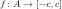
continuous. Then there is a continuous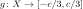
with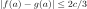
for every .
.
The sets
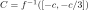
and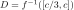
are closed in , hence closed in since is, and they are
disjoint. Urysohn's lemma gives a continuous
, hence closed in since is, and they are
disjoint. Urysohn's lemma gives a continuous
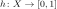
with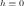
on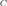
and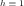
on ; put
; put 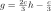
, which takes values in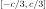
.For
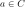
,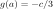
and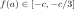
, so the difference is at most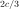
; for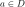
symmetrically; and for the remaining , both
, both  and
and 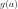
lie in , so they differ by at most .
Let be normal, closed, and
continuous. Then  extends to a continuous
extends to a continuous
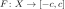
.Build
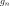
recursively. Let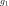
be given by the lemma for, so 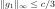
and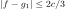
on. Given 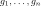
, apply the lemma to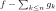
, which is continuous on
and bounded by 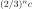
; this gives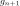
with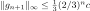
and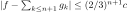
on.
The series
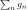
converges uniformly on by the
Weierstrass test, being dominated by
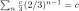
; so its sum is continuous
as a uniform limit of continuous functions, and
is continuous
as a uniform limit of continuous functions, and 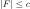
. On the partial sums converge to , by the error bound, so
extends .
Let be normal,
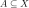
closed, and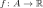
continuous. Then extends continuously to
.
Let
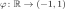
be a homeomorphism, for instance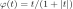
, whose inverse is continuous. By the bounded case, extends to a continuous
extends to a continuous
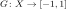
. The set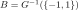
is closed and disjoint from, since does not take the
values 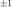
. Urysohn's lemma gives a continuous with on and on
. Then
and on
. Then 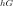
is continuous, takes values in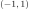
– it is where
where 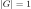
– and agrees with on
. So 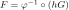
is a continuous extension of.
Closedness of is used twice and cannot be dropped: on
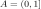
inside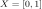
, the function has no
extension, and is not closed. The theorem is also a converse: a
space with closed points in which every such extension exists is normal,
since the function extending on and
has no
extension, and is not closed. The theorem is also a converse: a
space with closed points in which every such extension exists is normal,
since the function extending on and  on
separates them. So Tietze and Urysohn are two statements of one
property.
on
separates them. So Tietze and Urysohn are two statements of one
property.